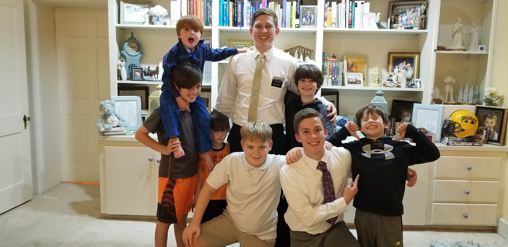

Character

Characteristics
Throughout my experiences and learning I have grown as an individual, a teammate, and a learner. I am hardworking, trustworthy, and reliable. Working in groups has shown me that I can be a reliable teammate. This was shown as I completed my portion of assignments in a timely manner and before the due date. I have also helped my teammates and classmates understand the content of an assignment or lesson when needed. I am also organized and flexible. While working in groups and partnerships I have learned to be open to others ideas and adaptive to the execution of ideas by others. Being flexible has allowed me to have a rapport with my teammates and also be exposed to a variety of ideas and concepts. I had the opportunity to serve a two-year mission on behalf of The Church of Jesus Christ of Latter-day Saints. While serving I was able to develop and grow in my communication and social skills. Throughout those two years, I talked to new people every day and taught them new concepts or ideas about my religion. As a result, I can clearly communicate ideas to others, express my opinion, and teach others in a way that they can understand. Overall, these skills that I possess allow me to be an effective employee and coworker.